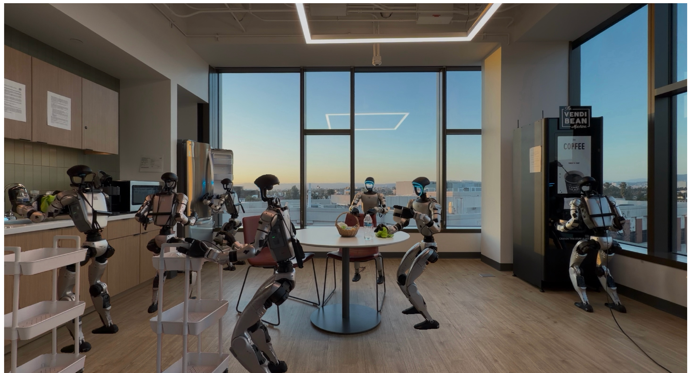
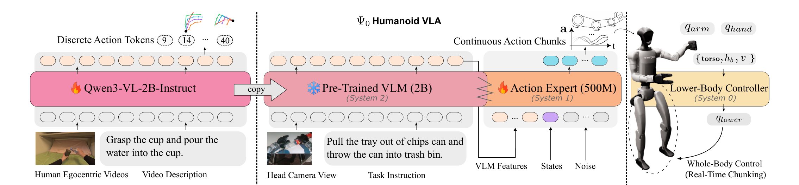
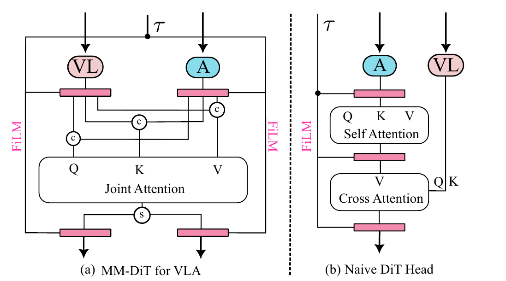
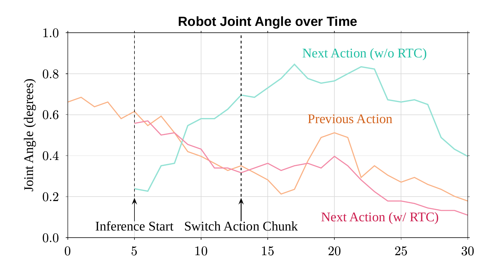
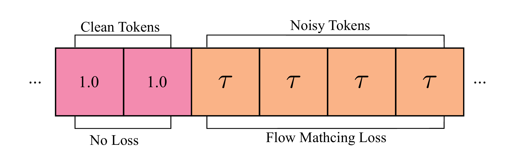
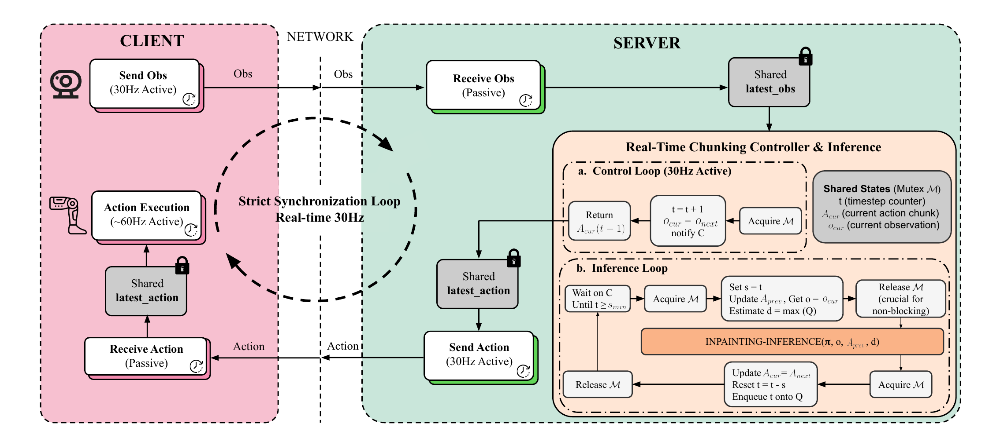
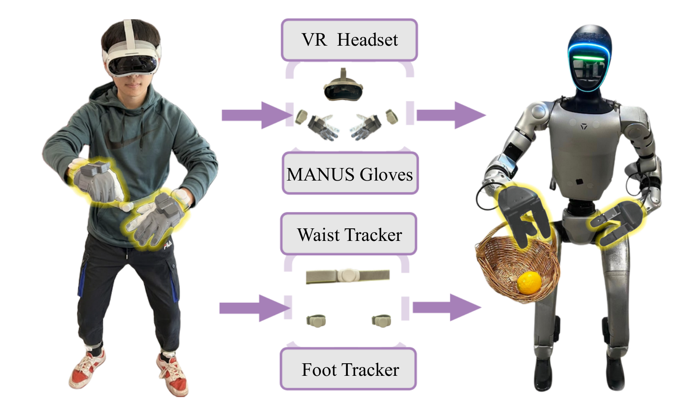
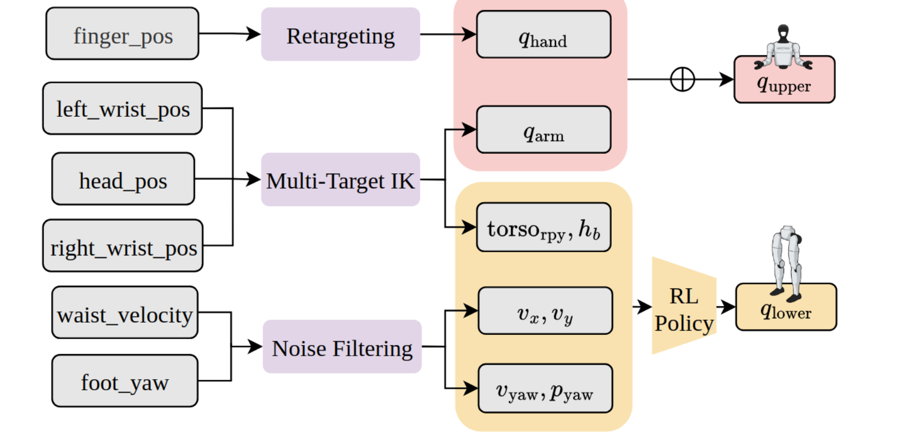
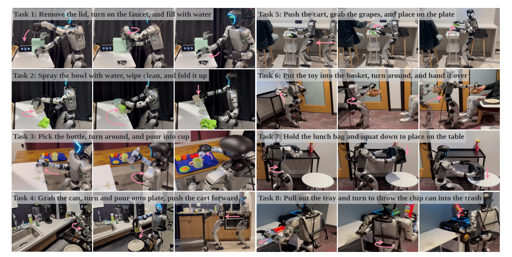
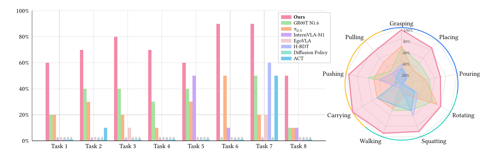

总览：数据不是越多越好，是"对的数据用对的方式"
人形机器人的 VLA 面临一个死结：想学会灵巧的长程操作，就要海量演示数据；但人形遥操作数据贵到离谱——一个操作员穿戴全套设备，一小时只能采一小时。主流答案（GR00T、π 系列）是"混合杂粮"：把互联网视频、跨本体机器人数据、仿真数据全部倒进一口锅里 co-training。Ψ₀ 的反主流论点是：人和机器人的运动学差异太大（自由度、动作频率、动力学全不一样），把两种本质不同的动作分布塞进同一个模型里联合训练，本身就是低效的。它的解法是"分而治之"：让 VLM 只从 800 小时人类第一视角视频里学"任务级动作先验 + 视觉表征"（学 what），让 action expert 只从 30 小时真机数据里学"关节级精确控制"（学 how）——两个阶段目标不同、数据不同、动作空间也不同。结果：数据量不到基线 1/10，8 个长程任务总成功率反超第二名 GR00T-N1.6 至少 40%。
展开原文 · 核心论点：解耦学习过程
"we argue that this strategy is suboptimal due to the fundamental kinematic and motion disparities between humans and humanoid robots. ... Ψ₀ decouples the learning process to maximize the utility of heterogeneous data sources."

论文五问速答
| ① 背景：问题为什么难 | 人形机器人的全身灵巧移动操作需要长程、精细的演示数据来训练 VLA。但人形遥操作要一名操作员穿戴全套设备实时采集，采一小时数据就花一小时人力——LLM 式"堆数据出奇迹"的路线在这里被数据成本卡死（§I, p.2）。 |
| ② 站在什么工作上 | 骨干 = Qwen3-VL-2B-Instruct（阿里 VLM）；action expert 架构 = MM-DiT（来自 Stable Diffusion 3）；下身控制 = AMO（现成 RL 策略，直接引用不重训）；动作分词 = FAST（π₀ 团队的 tokenizer，重训了一版）；实时分块 = training-time RTC（Black et al.）；整体"VLM + flow expert"范式承自 π₀ / π₀.₅。 |
| ③ 前人卡在哪 | 路线 A · 大规模真机 co-training（RT-2 / OpenVLA / GR00T / π 系列）：靠海量遥操作数据，对人形来说成本高到不可行。路线 B · 人类视频 co-training（EgoVLA / In-n-on：人机数据混训 + IK 映射；H-RDT：端到端混训）：人和机器人在自由度、动作频率、动力学上差异太大，一个模型同时建模两种动作分布本质低效，长程任务上仍然失败（§I p.2, §II.C p.3）。路线 C · 全身控制系（LangWBC / LeVERB 偏走路不做灵巧手；AMO / TWIST2 只管低层跟踪，没有任务级策略）。 |
| ④ 他们的 insight | 别人都在想"怎么把两种数据混得更好"，Ψ₀ 说：根本不该混。按学习目标拆成两个阶段——VLM 从人类视频学"任务级动作先验 + 视觉表征"（任务空间 / 离散 token / 单步），action expert 从真机数据学"关节级控制"（关节空间 / 连续块），各自用最适合自己的数据。原文的口号："effective scaling requires scaling the right data in the right way"（§I, p.2）。 |
| ⑤ 最后效果 | 8 个真实长程任务（每个 3–5 个子任务、>2000 步 @30Hz），总成功率比第二名 GR00T-N1.6 高至少 40%（Fig.7 / Table III），而 Ψ₀ 只用 800h 人类视频 + 30h 真机——基线们的预训练数据是它的 10 倍以上。消融（Table I）：去掉预训练+后训练 → 总成功率 0/10；完整配方 → 9/10。代价：VLM 预训练 64×A100 跑 10 天。全套开源（数据 pipeline / 权重 / 推理引擎 / 遥操作系统）。 |
数据集：三级火箭分别烧什么燃料
| 数据集 | 规模 | 是什么 | 喂给哪个阶段 |
|---|---|---|---|
| EgoDex | 829h · ~900M 帧 | Apple 团队（Hoque et al. 2025）用 Apple Vision Pro 采的人类第一视角灵巧操作视频，带逐帧上身位姿标注 + 文字描述。原始 30Hz，Ψ₀ 降采样到 10Hz、动作变换到头部相机坐标系、按 1%/99% 分位数归一化（§IV.A2, p.5） | Stage 1 · VLM 预训练（前 200k 步） |
| Humanoid Everyday | 31h · ~3M 帧 · 260 任务 | 本组自建（Zhao et al. 2025）的真机人形遥操作数据集，含 G1+Dex3-1 和 H1+Inspire 两种本体（手部关节按索引重排对齐成统一 28-DoF；只有上身动作，下身维度补零填充） | Stage 1 末尾 30k 步 + Stage 2 · action expert 后训练全程 |
| 自采任务内演示 | 每任务 80 条 | 用论文自己的 VR 遥操作系统（§06）在 8 个评测任务上采的域内演示——所有基线也用同样这批数据微调，保证公平对比 | Stage 3 · 逐任务微调（只训 action expert，40k 步） |
对外宣传的"只用 30 小时机器人数据"指 Humanoid Everyday；每任务另有 80 条域内演示（约几小时量级）没算进这个口径，但所有基线也用了同样的微调数据，所以对比仍然公平。真正的差异在预训练：基线（GR00T-N1.6 等）用了 10× 以上的混合数据，Ψ₀ 只用人类视频。
像培养一个外科医生：先让他看一万台手术录像（人类视频预训练——学会"手术流程长什么样"，不用真的动刀），再让他上手台练精细缝合（真机后训练——学会"自己的手怎么动"）。混合 co-training 相当于让学生一边看录像一边同时模仿录像里别人的手和自己的手——两套"手的语言"互相干扰。Ψ₀ 的实验证明：先看再练，比边看边练学得快得多。
三系统架构：System 2 想、System 1 出手、System 0 走路
上一节说了"解耦学习"的哲学，但要落地，架构必须先天支持"两个阶段学两种东西"。Ψ₀ 采用三系统（triple-system）架构：System 2 是 Qwen3-VL-2B 视觉语言模型（慢思考：看图 + 读指令 → 语义特征），System 1 是 500M 的 MM-DiT action expert（快出手：语义特征 + 本体状态 + 噪声 → 连续动作块），System 0 是现成的 AMO RL 控制器（本能：8 维高层指令 → 15 个下身关节的站稳/行走）。读完这节你会明白：36 维动作向量里每一维是什么、上下身怎么分工、以及为什么下身不让 VLA 直接控制。

第 1 步：先看一万遍人怎么做
Stage 1 的输入是 EgoDex——829 小时人类第一视角操作视频 + 文字描述。没有任何机器人参与。模型在这里见到的"动作"是人手腕的位姿和指尖位置（48 维任务空间），不是关节角。
输入是什么：相机图像或视频，加上任务指令和机器人当前状态。它们还是原始观测，模型尚未把它们变成可用于预测或控制的特征。
这一步究竟做什么：Stage 1 的输入是 EgoDex——829 小时人类第一视角操作视频 + 文字描述。没有任何机器人参与。模型在这里见到的"动作"是人手腕的位姿和指尖位置（48 维任务空间），不是关节角。
输出到哪里：经过本步骤处理、含义更明确的中间结果。这个结果会交给下一步“VLM 学着"预报下一步手往哪动"”继续处理。
为什么不能省略：它把未经处理的原始问题变成后续模块可以计算的输入，是整条链路的起点。
第 2 步：VLM 学着"预报下一步手往哪动"
Qwen3-VL-2B 被全参数训练成一个"动作语言模型"：把 48 维动作用 FAST 压成离散 token，然后像 GPT 预测下一个词一样预测下一步动作 token（Eq.1）。关键取舍：只预测单步动作，不预测动作块——目标是学任务语义，不是学精确控制。
输入是什么：来自上一步“先看一万遍人怎么做”的产物：经过本步骤处理、含义更明确的中间结果。本步骤还会按论文设置读取当前条件、时间步或训练信号。
这一步究竟做什么：Qwen3-VL-2B 被全参数训练成一个"动作语言模型"：把 48 维动作用 FAST 压成离散 token，然后像 GPT 预测下一个词一样预测下一步动作 token（Eq.1）。关键取舍：只预测单步动作，不预测动作块——目标是学任务语义，不是学精确控制。
输出到哪里：一组比原始输入更紧凑的内部特征；它不是最终动作或画面。这个结果会交给下一步“冻结，变成 System 2”继续处理。
为什么不能省略：它承担上下两步之间的接口；缺少它，前一步产生的信息无法以正确格式或正确含义传到下一步。
第 3 步：冻结，变成 System 2
预训练好的 VLM 复制过来并冻结。它从此只做一件事：把（头部相机画面，任务指令）编码成语义特征 z_t。之后任何阶段都不再动它——防止 30 小时的小数据把 800 小时学来的先验洗掉。
输入是什么：来自上一步“VLM 学着"预报下一步手往哪动"”的产物：一组比原始输入更紧凑的内部特征；它不是最终动作或画面。本步骤还会按论文设置读取当前条件、时间步或训练信号。
这一步究竟做什么：预训练好的 VLM 复制过来并冻结。它从此只做一件事：把（头部相机画面，任务指令）编码成语义特征 z_t。之后任何阶段都不再动它——防止 30 小时的小数据把 800 小时学来的先验洗掉。
输出到哪里：一组比原始输入更紧凑的内部特征；它不是最终动作或画面。这个结果会交给下一步“Action Expert 学"机器人的身体"”继续处理。
为什么不能省略：它承担上下两步之间的接口；缺少它，前一步产生的信息无法以正确格式或正确含义传到下一步。
第 4 步：Action Expert 学"机器人的身体"
500M 的 MM-DiT 从零开始，在 Humanoid Everyday（31h 真机遥操作数据）上用 flow matching 训练（Eq.2）：条件是 VLM 特征 + 本体状态，输出未来 H 步的 36 维关节空间动作块。它是唯一建模机器人动力学的模块。
输入是什么：来自上一步“冻结，变成 System 2”的产物：一组比原始输入更紧凑的内部特征；它不是最终动作或画面。本步骤还会按论文设置读取当前条件、时间步或训练信号。
这一步究竟做什么：500M 的 MM-DiT 从零开始，在 Humanoid Everyday（31h 真机遥操作数据）上用 flow matching 训练（Eq.2）：条件是 VLM 特征 + 本体状态，输出未来 H 步的 36 维关节空间动作块。它是唯一建模机器人动力学的模块。
输出到哪里：一组比原始输入更紧凑的内部特征；它不是最终动作或画面。这个结果会交给下一步“下身交给 RL 本能”继续处理。
为什么不能省略：它承担上下两步之间的接口；缺少它，前一步产生的信息无法以正确格式或正确含义传到下一步。
第 5 步：下身交给 RL 本能
36 维动作里，28 维（双臂 14 + 双手 14）直接下发给上身关节；剩下 8 维（torso_rpy、基座高度 h_b、速度 v_x/v_y/v_yaw、朝向 p_yaw）是"高层指令"，交给现成的 AMO RL 策略去驱动 15 个下身关节。VLA 说"往前走半米、蹲低 10cm"，RL 负责别摔倒。
输入是什么：来自上一步“Action Expert 学"机器人的身体"”的产物：一组比原始输入更紧凑的内部特征；它不是最终动作或画面。本步骤还会按论文设置读取当前条件、时间步或训练信号。
这一步究竟做什么：36 维动作里，28 维（双臂 14 + 双手 14）直接下发给上身关节；剩下 8 维（torso_rpy、基座高度 h_b、速度 v_x/v_y/v_yaw、朝向 p_yaw）是"高层指令"，交给现成的 AMO RL 策略去驱动 15 个下身关节。VLA 说"往前走半米、蹲低 10cm"，RL 负责别摔倒。
输出到哪里：经过本步骤处理、含义更明确的中间结果。这个结果会交给下一步“部署——实时分块无缝衔接”继续处理。
为什么不能省略：它承担上下两步之间的接口；缺少它，前一步产生的信息无法以正确格式或正确含义传到下一步。
第 6 步：部署——实时分块无缝衔接
整个模型 2.5B 参数、一次前向 ~160ms，但控制环要 30Hz。靠训练时实时分块（training-time RTC，§05）：新动作块以旧块已执行的部分为条件生成，块间无跳变。最终全身 43 DoF（28 上身 + 15 下身）平滑连续地动起来。
输入是什么：来自上一步“下身交给 RL 本能”的产物：经过本步骤处理、含义更明确的中间结果。本步骤还会按论文设置读取当前条件、时间步或训练信号。
这一步究竟做什么：整个模型 2.5B 参数、一次前向 ~160ms，但控制环要 30Hz。靠训练时实时分块（training-time RTC，§05）：新动作块以旧块已执行的部分为条件生成，块间无跳变。最终全身 43 DoF（28 上身 + 15 下身）平滑连续地动起来。
输出到哪里：可发送给机器人控制器的动作，以及执行后重新观测到的真实状态。这是图中这条链路的最终产物，随后会进入真实执行、模型更新或指标评测。
为什么不能省略：机器人动作会改变下一次观测；只有执行后重新读取现实，才能发现预测误差并阻止错误连续累积。
36 维动作向量：每一维是什么
| 分段 | 维度 | 去向 | 含义 |
|---|---|---|---|
| q_hand | 14 | 直接控制 | 双手 Dex3-1 关节角（每手 7 DoF） |
| q_arm | 14 | 直接控制 | 双臂关节角（每臂 7 DoF） |
| torso_rpy | 3 | → System 0 | 躯干 roll / pitch / yaw（弯腰、转体） |
| h_b | 1 | → System 0 | 基座高度（蹲下 / 站起） |
| v_x, v_y | 2 | → System 0 | 水平线速度（走路方向和快慢） |
| v_yaw, p_yaw | 2 | → System 0 | 转身角速度 + 目标朝向 |
| 合计 36 维 | AMO 把 8 维指令展开成 15 关节 → 全身 28+15 = 43 DoF | ||
展开原文 · 三系统与动作空间定义
"Ψ₀ is a foundation model that adopts a triple-system architecture ... The 8-DoF lower-body actions {torso_rpy, h_b, v_x, v_y, v_yaw, p_yaw} are passed to system-0, a RL–based tracking policy. ... Together with the 28-DoF upper-body joints (q_arm, q_hand), the system outputs 43-DoF actions for whole-body control."
"VLM backbone + flow-based action expert"这个骨架直接承自 π₀（PaliGemma + 300M expert），但有三处关键分岔：① π₀ 的 expert 和 VLM 联合训练，Ψ₀ 的 VLM 预训练后永久冻结，expert 从零单独训；② π₀ 的 backbone 是 PaliGemma-3B，Ψ₀ 换成了更新的 Qwen3-VL-2B，且预训练数据不是网图-文本而是人类操作视频；③ π₀ 是桌面/移动双臂，Ψ₀ 多了 System 0，把"腿"纳入动作空间——这是 loco-manipulation 的本质增量。
训练配方：三阶段、两个动作空间、两条 loss
§02 给了骨架，但没回答最关键的操作问题：两个阶段分别拿什么数据、优化什么目标、动作长什么样？这一节把三阶段配方拆到公式级。先记住一条主线：预训练和后训练用的是两个完全不同的动作空间——Stage 1 是 48 维"任务空间"（人手腕位姿 + 指尖位置，人和机器人共享），Stage 2/3 是 36 维"关节空间"（G1 的真实关节角）。正是这个"换空间"设计让人类数据和机器人数据各自待在自己最自然的表示里，谁也不迁就谁。
Stage 1 · 预训练：把 VLM 训成"动作语言模型"
输入人类第一视角视频帧 + 任务描述，让 Qwen3-VL 像 GPT 预测下一个词一样，自回归地预测下一步动作的离散 token。动作用统一的 48 维任务空间表示——人手和机器人末端执行器都能映射进来：
| 分段（每只手） | 维度 | 含义 |
|---|---|---|
| T_wrist | 9 | 手腕位姿：3D 位置 + 6D 旋转 |
| P_thumb … P_pinky | 5×3 | 五个指尖的 3D 位置 |
| 24 × 双手 = 48 维 | 变换到头部相机坐标系（视角无关）· 30Hz 降到 10Hz | |
连续动作要先变成离散 token 才能让 VLM "说"出来。Ψ₀ 用 FAST 分词器，但发现开源版在噪声数据上重建误差大，于是用 EgoDex 的 50 万条动作重训了一版：归一化 L1 重建误差从 5.83×10⁻⁴ 降到 1.95×10⁻⁴，代价是平均 token 数从 2.08 涨到 13.04（附录 Table II, p.12）。
正常 VLA 预测动作块（几十步），但自回归地生成多步高维动作 token 计算上极其昂贵，会把预训练拖慢一个数量级。Ψ₀ 的洞察：预训练的目标是学任务语义和视觉表征，不是学精确控制——预测单步 a_t 就足够了（§III.B1, p.4）。精确的多步控制留给 Stage 2 的 flow matching。消融证明这个"打折"的预训练依然极其有效：光加上它，总成功率 0.2 → 0.6（Table I）。
- $\mathbf{a}_l$
- 动作序列的第 $l$ 个 FAST token——48 维连续动作被压缩成 $N \approx 13$ 个离散符号，模型逐个往外吐
- $\mathbf{a}_{<l}$
- 已生成的前缀 token——标准自回归条件，和 GPT 生成文本一模一样
- $\ell$
- 语言任务描述（如 "Grasp the cup and pour the water into the cup."）
- $\mathbf{o}_t$
- 当前观测 = 第一视角视频帧（预训练阶段不喂本体状态——人类视频里没有可靠的"状态"）
- $\prod \cdots$
- 链式法则连乘 = 交叉熵训练。直觉：把"下一步手往哪动"当成一门语言来学
Stage 2 · 后训练：flow matching 学关节控制
VLM 冻结，500M 的 MM-DiT action expert 从零训练。现在预测的不再是离散单步，而是连续的关节空间动作块 $\mathbf{a}_{t:t+H}$（36 维/步）。直觉先行：flow matching 像教一个导航系统——随机把真动作"打"到噪声和数据之间的某个位置，让模型报告"从这里回到真动作该往哪个方向走"；推理时从纯噪声出发，沿着预测的方向场积分几步就还原出动作。
- $\mathbf{z}_t = f_\theta^{vlm}(\mathbf{o}_t, \ell)$
- 冻结 VLM 抽出的隐层特征——语义条件从这里注入，θ 不再更新，只训 ρ
- $\boldsymbol{\epsilon}$
- 高斯噪声，flow 的起点（对应 $\tau{=}0$）
- $\mathbf{a}_t^\tau$
- 插值样本：真动作 $\mathbf{a}_t$ 和噪声 $\boldsymbol{\epsilon}$ 的线性混合，$\tau \sim U[0,1]$ 均匀采样（论文试过非均匀采样策略，没有差别，§VI.B p.13）
- $v_\rho^{flow}(\cdot)$
- MM-DiT 预测的速度场——注意 Ψ₀ 的符号约定是预测 $(\boldsymbol{\epsilon}-\mathbf{a}_t)$，即"指向噪声"的方向；推理时反向积分即可，和 π₀ 的 $(\mathbf{a}-\boldsymbol{\epsilon})$ 约定只差一个负号，本质相同
- $\|\cdot\|$
- 回归损失：预测方向 ≈ 真实直线方向。一步监督整个动作块的所有维度——比自回归逐 token 生成高效得多，这正是"块留给 Stage 2"的原因
Stage 3 · 微调 + 三阶段总账
每个下游任务用 80 条自采遥操作演示，只微调 action expert（VLM 仍冻结），40k 步。三阶段的开销与产出：
| 阶段 | 训谁 | 数据 / 动作空间 | 算力 |
|---|---|---|---|
| 1 · 预训练 | VLM 全参数 🔥 | EgoDex 829h + HE 收尾 · 48 维任务空间 · 离散单步 | 64×A100 × 10 天（230k 步，batch 1024） |
| 2 · 后训练 | expert 从零 🔥（VLM ❄️） | Humanoid Everyday 31h · 36 维关节空间 · 连续块 | 32×A100 × 30 小时（30k 步，batch 2048） |
| 3 · 微调 | 仅 expert 🔥 | 每任务 80 条演示 · 同上 | 每任务 40k 步（batch 128） |
展开原文 · 预训练"学表征"的证据
"even though the VLM backbone is trained to predict a different action representation than that used by the downstream action head, supervising it with next-step 48-DoF actions still enables the model to learn meaningful visual representations for robotic tasks."
MM-DiT vs naive DiT：action 和 VL 要"平起平坐"
§03 说 action expert 用 flow matching 训练，但那个 $v_\rho^{flow}$ 网络内部长什么样？最省事的做法是接一个"朴素 DiT 头"：动作 token 自己做 self-attention，VL 特征通过 cross-attention 注入——大多数 VLA 就是这么干的。Ψ₀ 说这不够：naive DiT 是为"文本条件生图"设计的，文本只是弱条件；但 VLA 里视觉-语言特征是主角，得让 VL 和 action 两路 token 在每一层做联合注意力。方案抄自 Stable Diffusion 3 的 MM-DiT，这也是标题里"比 naive DiT 更 capable"的来源。

MM-DiT 像把视觉语言组和动作组拉进同一间会议室开会——每轮讨论（每层）双方都能直接对话；naive DiT 像两个组各开各的会，VL 组每轮只递一张纸条（cross-attention）进来。任务语义越复杂，纸条越不够用。消融结果（Table I 第 1 vs 2 行，同为"无预训练/无后训练"条件）：naive DiT 总成功率 0/10、右臂子任务 1/10；MM-DiT 总成功率 2/10、右臂子任务 9/10——条件信号的强弱在精细操作上差距悬殊（§07 详表）。
实时动作分块 RTC：160ms 的大脑怎么驱动 30Hz 的身体
§03/§04 解决了"怎么训"，但部署撞上一堵物理墙：Ψ₀ 共 2.5B 参数，一次前向要 ~160ms，而 G1 的控制环跑在 30Hz（每 33ms 要一个动作）。天真的"执行完一块 → 停下来想 → 再执行"会让机器人每隔一秒定格思考（stop-and-think）；提前异步推理呢？新旧两块动作衔接处会跳变——上一块手还在往左，新一块突然让它往右，全身控制里这种抖动直接引发碰撞。Ψ₀ 的答案分两层：算法层用训练时实时分块（training-time RTC）让新块天生和旧块连续；系统层用异步双循环让推理永远赶在旧块用完之前。

训练时 RTC：把"接得上"直接练进模型
做法出奇地简单（Fig.8）：训练时随机把动作块的前 $d$ 个 token 当成"干净的"——不加噪（相当于 $\tau{=}1$）、也不算 loss；只对后面的 token 加噪 + 算 flow matching loss。其中 $d = \mathrm{uniform}(0, d_{\max})$，$d_{\max}{=}6$。模型于是被迫学会一件事："给定开头几步已经定死的动作，把剩下的补出来且保持连续"——本质是动作序列上的 inpainting（补全）。推理时，把上一块里已执行/已承诺的动作当作干净前缀喂进去，新块自然长在旧块的延长线上。

RTC 的原版（Black et al.）是推理时方案：不改训练，靠推理时对速度场做梯度引导（guidance）把新块"拉向"旧块。Ψ₀ 试了，结论："we found that our model can not be guided at test time stably"（§IV.C.c, p.8）——引导不稳定，只好改成训练时方案。代价是训练流程变复杂，收益是推理零额外开销。另一个诚实的数据点：给 GR00T-N1.6 也装上 RTC，成功率基本持平（附录 Table IV：7/10 vs 6/10）——RTC 主要治"抖动和碰撞"，不是提分神器。
系统层：控制环和推理环各转各的

遥操作：微调数据的质量，从"怎么采"就决定了
前面全在讲模型，但 Stage 3 每任务那 80 条演示从哪来、质量如何，直接决定微调上限——垃圾演示微调出垃圾策略。人形全身遥操作现有两条路都不好走：端到端全身重定向（TWIST2 / SONIC 式：把人的全身动作直接映射给机器人 RL 跟踪）信号噪、下身不稳，会出现脚漂移和小碎步，这些坏动作全被录进数据；解耦式（AMO 式：手柄给移动指令）下身稳了，但手被降维成低自由度 gripper 指令，或者要两个操作员。Ψ₀ 的遥操作系统专为 loco-manipulation 定制：上身高精度直控、下身高层指令、单人操作——而且接口刻意和模型的 36 维动作空间完全一致。

信号流：和模型动作空间严格对齐

展开原文 · 为什么不做端到端全身重定向
"we find that end-to-end whole-body tracking and retargeting is often not robust, frequently leading to foot drifting, unstable lower body motion, and excessive small corrective steps that hinder policy learning."
注意一个贯穿全文的对齐：遥操作采出来的动作（上身关节 + 8 维下身指令）、Humanoid Everyday 的动作格式、模型输出的 36 维动作块、部署时 AMO 吃的指令——是同一个东西。数据怎么采，模型就怎么学、就怎么执行。很多系统的隐性 bug 来自这三层接口不一致（比如用全身重定向采数据、却用高层指令部署），Ψ₀ 从遥操作设计起就把这条链焊死了。
实验：8 个长程任务的验收 + 一张干净的消融账单
配方讲完了，现在验收两个问题：① 这套"解耦"配方到底比"混合 co-training"强多少？② 配方里每一味药（预训练/后训练/MM-DiT/RTC）分别值多少分？评测有一个值得注意的诚实设计：任务是长程的（3–5 个子任务、多数超过 2000 步 @30Hz），早期子任务失败会连坐后面——所以评估员被允许人工干预推进失败的子任务，同时报告子任务级成功率，避免"第一步全挂导致后面全是 0"掩盖真实能力差异（§IV.B2, p.6）。
8 个任务长什么样

对 7 个基线：不是小胜，是断层
基线覆盖了当前所有主流路线，且论文声明"invest huge effort to reproduce the best possible results for each"——每个基线都用同样的 80 条/任务演示微调、同样的观测和动作表示、同样的部署代码（§IV.B3, p.6）：
| 基线 | 路线 | 结果一瞥（Fig.7 / Table III） |
|---|---|---|
| GR00T N1.6 | 人形基础模型 · 大规模混合数据 | 第二名：抓取/移动尚可，总成功率仍被 Ψ₀ 甩开 ≥40% |
| π₀.₅ | 移动双臂 VLA · 扩到 36 维动作 | 个别任务能跑（T6 5/10），长程整体乏力 |
| InternVLA-M1 | 空间推理 VLA | 动作块间抖动（jitter），执行不稳定 |
| H-RDT | 2B 大 DiT · 末端执行器空间 | 粗动作可以，多关节高精度操作挣扎（T7 6/10 是亮点） |
| EgoVLA | 人类视频 co-training + IK 映射 | 下身指令控制弱——预训练只学了上身/手，没有下身先验 |
| Diffusion Policy | 从零训练 · ResNet-18 | 几乎全任务失败——UNet 视觉容量不足 |
| ACT | 从零训练 · Transformer | 仅 T7 5/10，其余接近全灭 |

消融账单：每味药值几分（Table I 重建）
消融任务是一个三步双臂任务：右臂抓玩具入盒 → 左臂抓玩具入盒 → 双臂抬盒。逐行读下来就是一部"从 0 到 0.9"的进化史：
| EgoDex 预训练 | 后训练 (HE) | RTC | 动作头 | 右臂搬运 | 左臂搬运 | 双臂抬 | 总成功率 |
|---|---|---|---|---|---|---|---|
| ✗ | ✗ | ✗ | naive DiT | 1/10 | 1/10 | 1/10 | 0/10 |
| ✗ | ✗ | ✗ | MM-DiT | 9/10 | 2/10 | 3/10 | 2/10 |
| ✓ | ✗ | ✗ | MM-DiT | 8/10 | 6/10 | 6/10 | 6/10 |
| ✓ | ✓（预训练收尾） | ✗ | MM-DiT | 8/10 | 8/10 | 9/10 | 8/10 |
| ✓ | ✓ | ✗ | MM-DiT | 9/10 | 9/10 | 10/10 | 9/10 |
| ✓ | ✓ | ✓ | MM-DiT | 9/10 | 9/10 | 9/10 | 9/10 |
三个读数：① 预训练是最大单项（2/10 → 6/10）——即使 VLM 预训练时预测的动作表示和下游完全不同（48 维任务空间 vs 36 维关节空间），它学到的视觉表征依然是决定性的；② 后训练再进一档（6 → 8 → 9）；③ RTC 对成功率中性（9/10 → 9/10）——它买的是平滑和防碰撞，不是分数（§IV.C, p.8）。
附录里三个更狠的消融
展开原文 · 效果归因
"our model outperforms all baselines by a large margin ... it achieves an average overall success rate that is at least 40% higher than that of the second-best baseline, GR00T-N1.6 ... despite using a relatively small amount of robotic data in both the pre-training and post-training stages."
与 VLA / 已读论文的联系 + 批判
把 Ψ₀ 放回我们已经读过的论文地图里。它和 OpenHLM 是最直接的同题对照（同为 G1 上的人形 loco-manipulation VLA，一个改接口、一个改数据配方）；和 π₀.₅ 是"继承 + 击败"的关系；和 SONIC / Humanoid-GPT 分处上下两层。最后给几条批判性保留。
同题对照：Ψ₀ vs OpenHLM（都在 G1 上做人形 loco-manip VLA）
| 维度 | OpenHLM（清华） | Ψ₀（USC PSI Lab） |
|---|---|---|
| 核心命题 | 全身"原生"VLA 该怎么搭——13 个受控实验找配方 | 数据该怎么喂——解耦人类视频与真机数据 |
| 下身控制 | VLA 直接出全身关节（joint-based，含腿） | VLA 出 8 维高层指令，AMO RL 负责腿 |
| 预训练来源 | π₀.₅ 权重（网图-文本-动作先验） | Qwen3-VL + 800h 人类第一视角视频（动作先验） |
| 遥操作 | Joint-based 全关节重定向（能表达蹲/踩） | 上身 IK + 下身高层指令（下身不重定向） |
| 哲学分歧 | 腿要进动作空间——腿也是操作的一部分 | 腿交给 RL 本能——VLA 管"去哪"不管"怎么迈" |
OpenHLM 的实验支持"全身关节遥操作才能表达蹲踩踢"，Ψ₀ 的实验支持"全身重定向噪声大、伤数据质量"——两篇的证据都成立，因为任务分布不同：OpenHLM 的任务需要腿参与操作（踩、跨），Ψ₀ 的 8 个任务里腿只负责移动和蹲高。选哪条路线，取决于你的任务里"腿是执行器还是底盘"。
在 VLA 谱系里的位置
对 π₀.₅：Ψ₀ 是"弑师"结构——范式（VLM + flow expert + 分层推理）承自 π 系列，但把它作为基线打败了（π₀.₅ 扩到 36 维动作后长程任务乏力）。关键差异是预训练语料：π₀.₅ 的 backbone 见的是网图和跨本体机器人数据，Ψ₀ 的 backbone 见的是和部署视角对齐的人类第一视角操作视频。
对 SONIC / Humanoid-GPT（我们刚读过的 tracking 层）：它们 scale 的是"动作执行器"（50Hz 低层全身控制），Ψ₀ scale 的是"任务策略"（10Hz 语义→动作）。Ψ₀ 的 System 0（AMO）就是 SONIC/Humanoid-GPT 们竞争的那个生态位——三层图景（VLA 策略 → 动作接口 → 大规模 tracker）在这篇里已经是产品形态。
对 EgoDex/EgoVLA 路线：Ψ₀ 证明人类视频的正确用法不是"和机器人数据混训"而是"独占预训练阶段"——这个结论对所有想用人类视频的工作（包括 DreamDojo 的 44k 小时人类视频世界模型路线）都有参考价值：数据的价值取决于它被放进哪个训练阶段。
批判与保留
① "基础模型"名不副实的地方：多任务微调掉点严重（-70%），意味着它仍是"逐任务微调的强底座"，离"一个 checkpoint 打天下"的 foundation model 还有距离——GR00T 至少在朝多任务单模型走。
② 40% 领先的语境：基线们（π₀.₅/GR00T）没有为"G1+Dex3-1+这 8 个任务"专门设计，动作空间是 pad/改造出来的；复现投入再大也是"客场作战"。领先真实，幅度要打折读。
③ 下身能力被 AMO 封顶：8 维指令接口意味着凡是 AMO 做不了的（上下楼梯、跨障、用腿顶东西），Ψ₀ 永远做不了——这是解耦换稳定性的隐性代价，正好是 OpenHLM 路线的反面。
④ 算力口径："只用 30h 机器人数据"很省，但 64×A100×10 天的 VLM 预训练（~15k GPU 时）并不便宜——省的是遥操作人力，不是总成本。论文自己也承认受算力限制没能继续 scale（Limitation, p.9）。
① 数据不混：按学习目标分阶段，各用各的动作空间——人类视频学语义（任务空间/单步/离散），真机数据学控制（关节空间/块/连续）。
② 预训练预测什么不重要，学到的表征才重要——48 维任务空间的单步预测，喂出了 36 维关节控制需要的视觉表征。
③ 接口一致性是系统级胜负手——遥操作、数据集、模型输出、部署控制器共用同一个 36 维动作定义，全链路无翻译损耗。